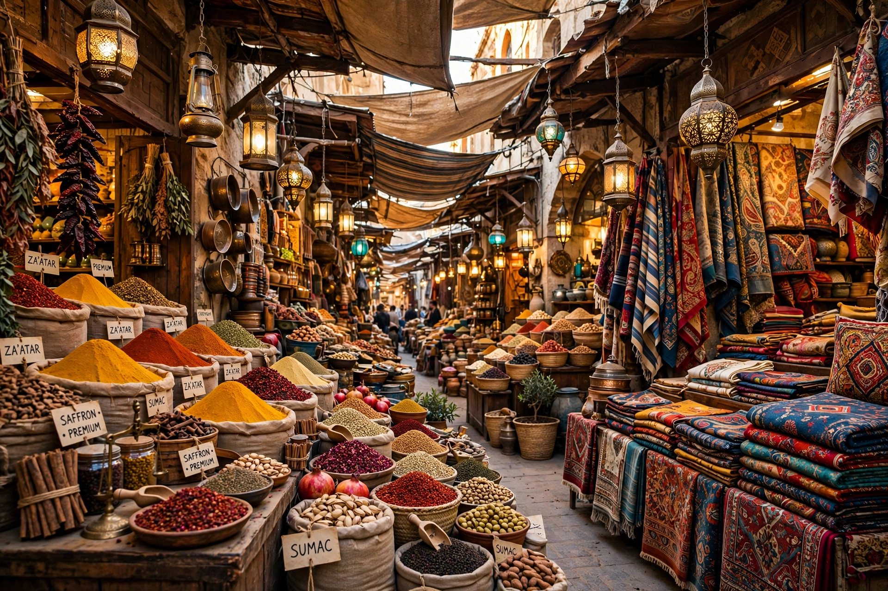

A bazaar (from Persian bāzār) is a marketplace consisting of multiple small stalls or shops, especially in the Middle East, Central Asia, North Africa and South Asia. Traditionally located in vaulted or covered streets, bazaars formed the economic and social heart of Islamic cities.
Bazaars developed alongside caravanserais and mosques in Persian and later Ottoman and Mughal cities. Goods arrived by caravan trade, and shops were grouped by trade — goldsmiths, carpet sellers, spice merchants — often near the central mosque.
Historically, bazaar merchants formed influential guilds and the bazaar was regulated by the muhtasib, an inspector of markets and morals. In Iran, the alliance between bazaar merchants and clergy played major political roles, including in the 1979 revolution.
Famous examples include the Grand Bazaar in Istanbul, the bazaars of Isfahan, Tabriz (a World Heritage Site), Aleppo and Khan el-Khalili in Cairo.
Caravanserai · Souk · Market